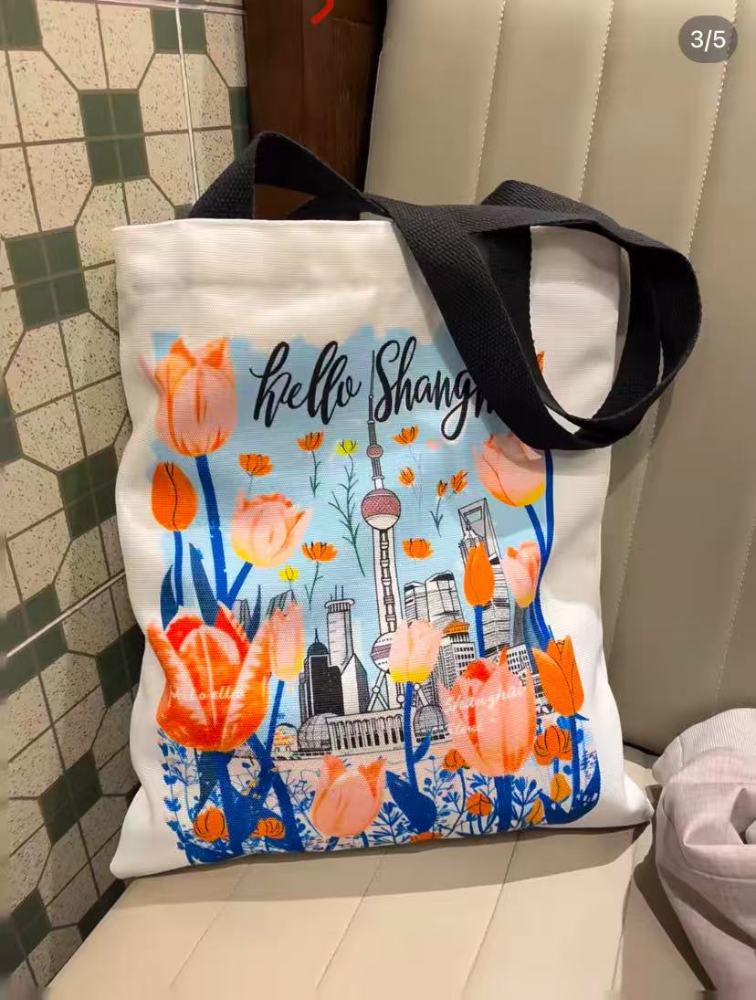
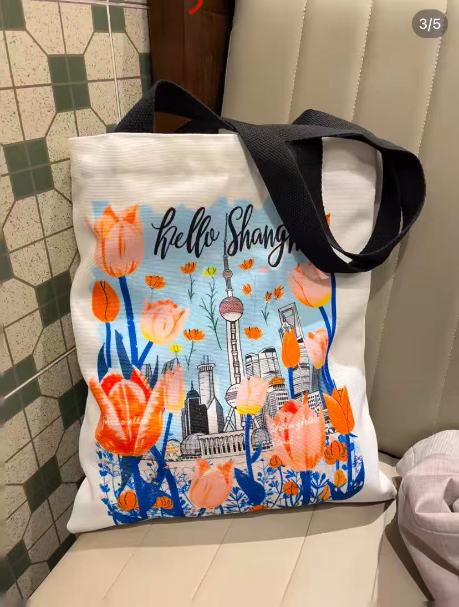
 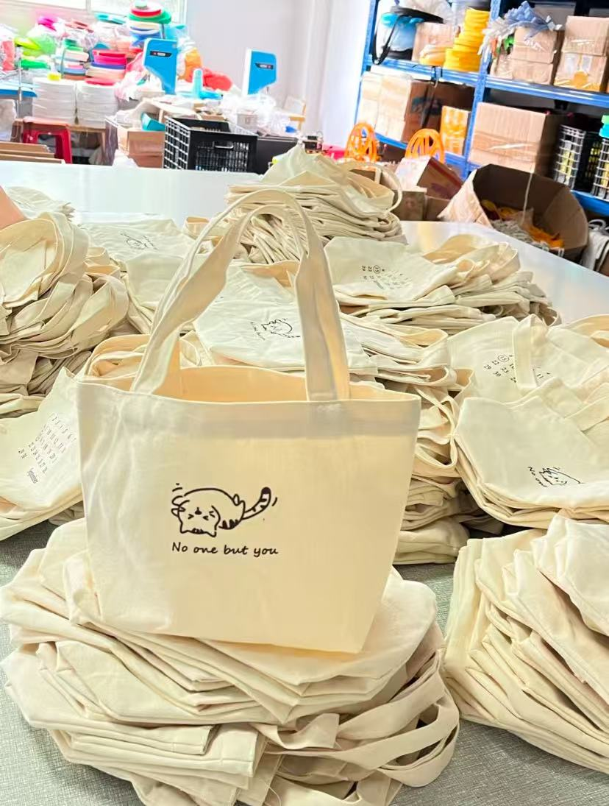
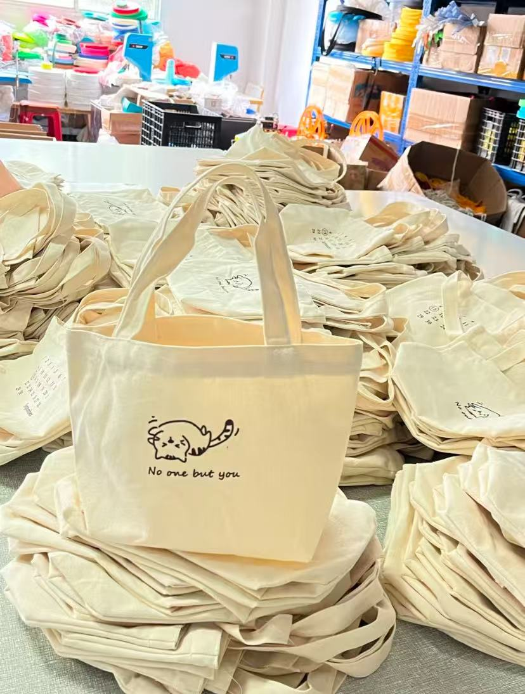


 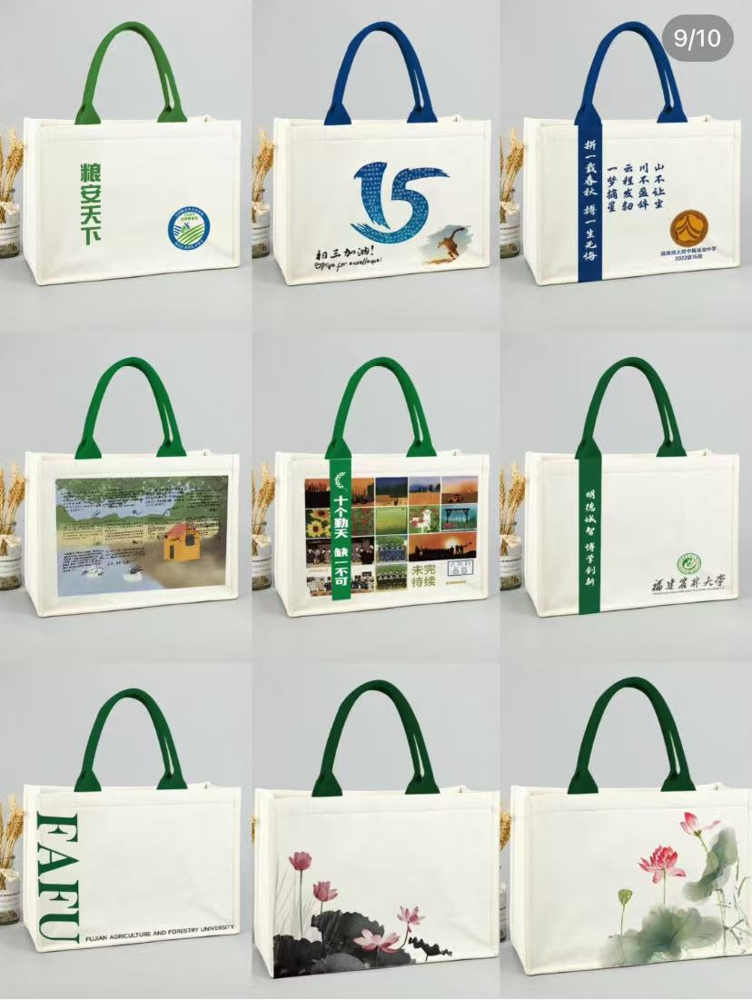
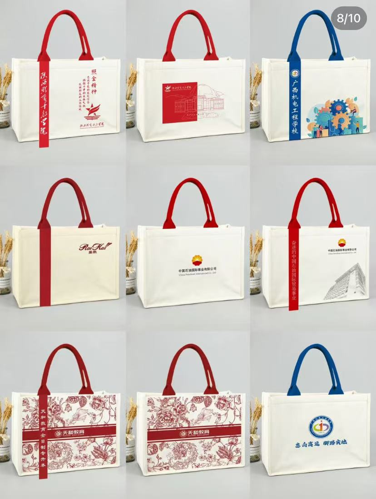
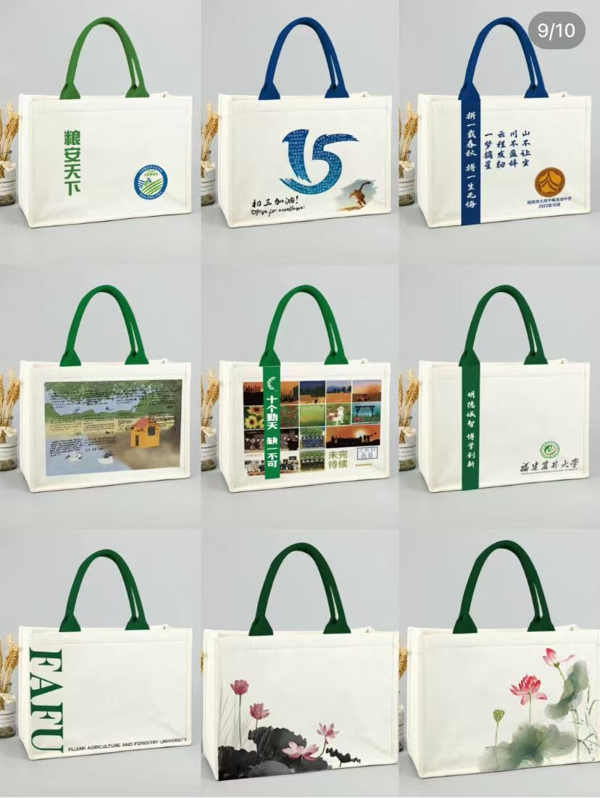
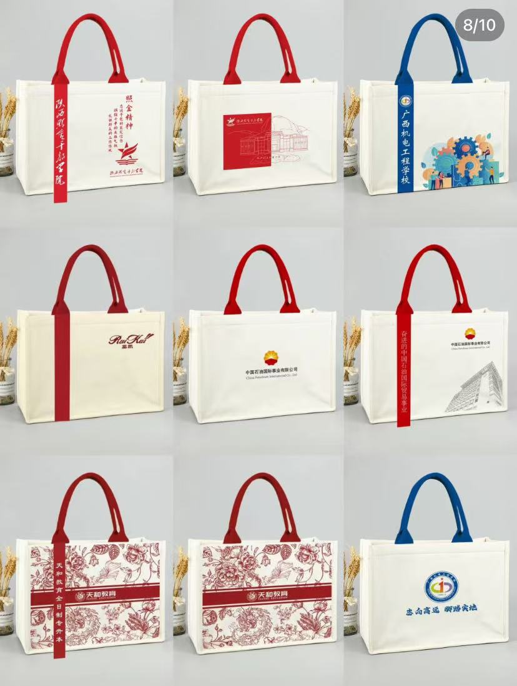


 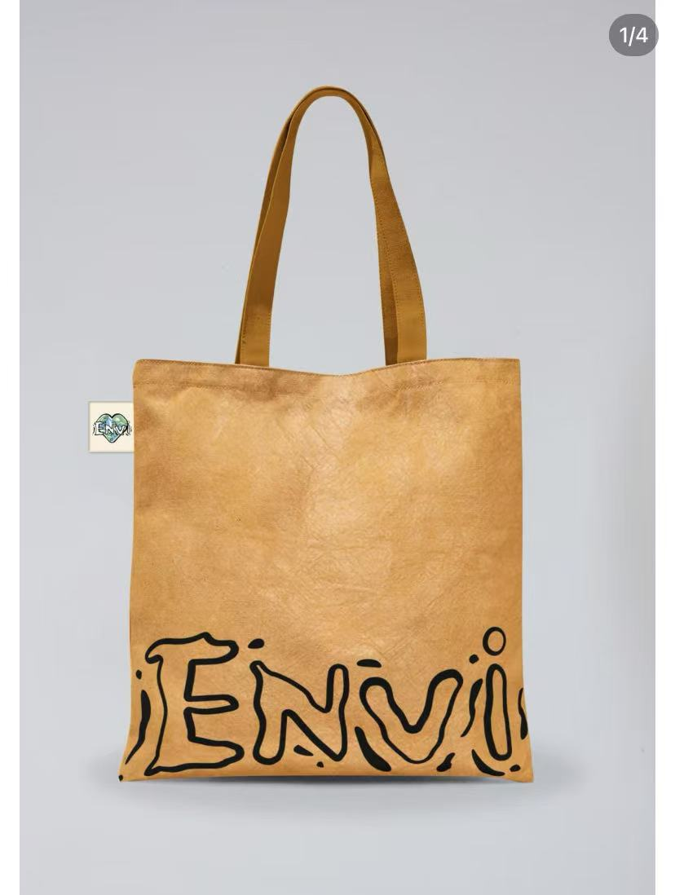
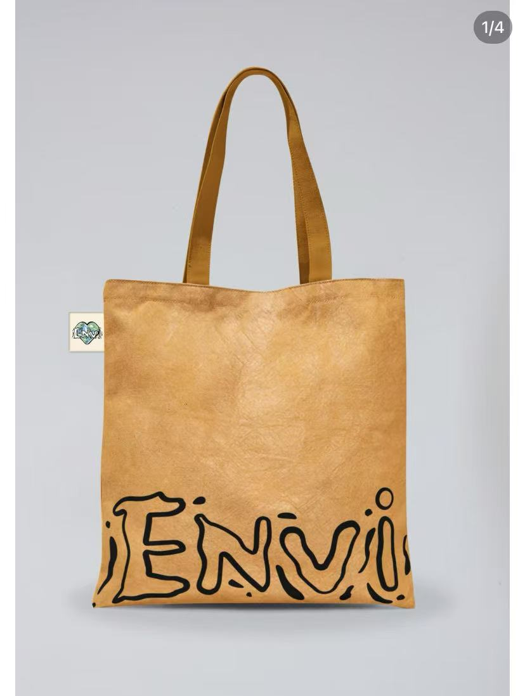
 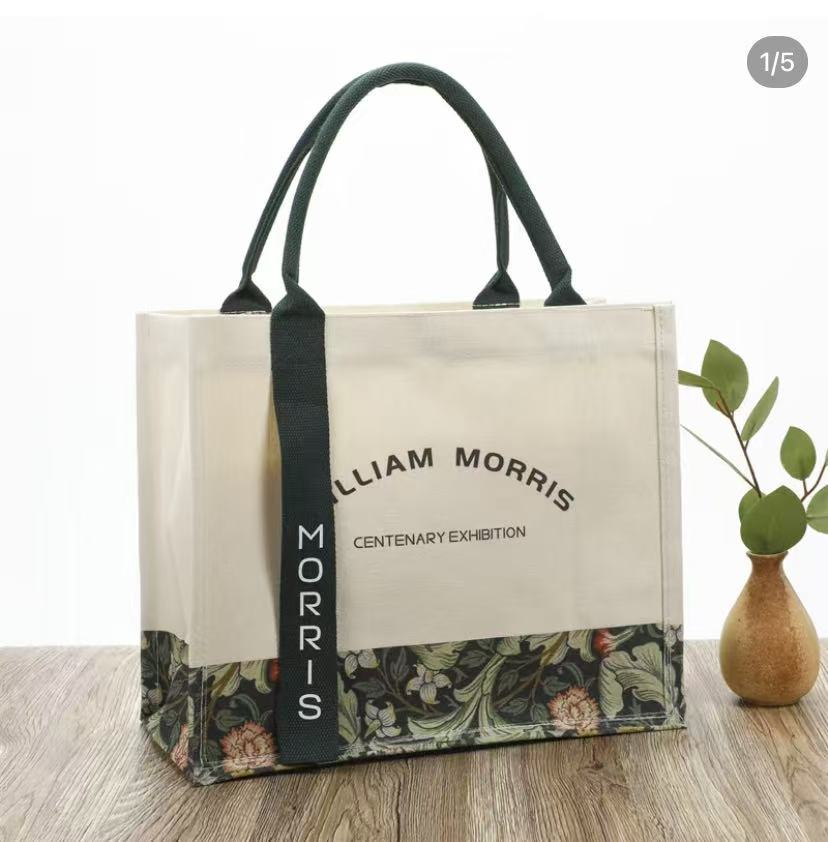
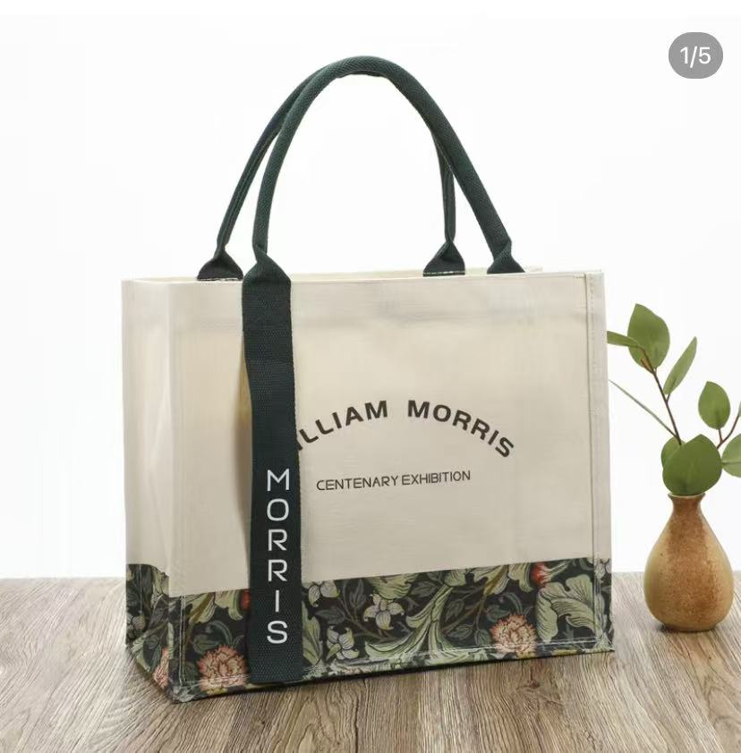
We are a leading manufacturer in Zhejiang, China, specializing in custom canvas tote bags. With a 15 - year track record, we have produced hundreds of millions of canvas bags.
Our prices are highly competitive globally, with an average unit price of each canvas bag ranging from $0.4 to $1. Many middlemen and agents source from us because the market price is at least 50% higher than ours. We offer top - notch quality and service, and our repeat customer rate exceeds 90%.
We provide one - on - one free design, accurate quotes, and sample - making services. You only need to pay the shipping fee and a deposit. The design and sample - making can be completed within 1 - 3 days, and the products can be shipped in 4 - 7 days. The minimum order quantity for bulk orders is 100 pieces.
We can make various types of bags from different canvas materials such as polyester - cotton, polyester, and pure cotton. We also offer custom - made jute bags, DuPont paper bags, tote bags, laminated canvas bags, vest bags, wrist bags, drawstring bags, etc., in different processes, materials, and sizes according to your needs. You can trust Chinese manufacturing for its excellent quality and affordable price.
Our canvas bags are made of eco - friendly materials, can be washed without fading, and have a lifespan of 3 - 5 years. They are suitable for use as gifts, daily carry - alls, supermarket shopping bags, etc. They are very popular and widely used. Many companies, museums, libraries, schools, and government agencies have chosen our canvas bags for their events and promotional activities.
We hope to turn every business deal into a long - term friendship. If you have any requirements for custom canvas bags, please feel free to contact us:
Email: zhouyanchong12@gmail.com